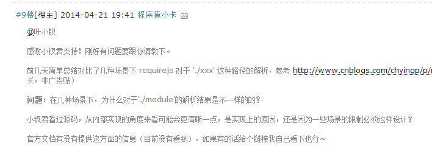
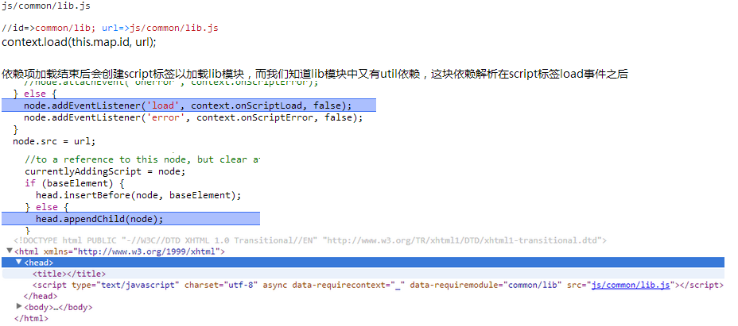

这两天正好看到了程序员小卡同学的一篇博客，里面对requireJS路径的解析做了一些说明，里面有点问题待解决，我这里正好知道一点，所以整理成文，不知对小卡同学是否有帮助。

requirejs.config({ baseUrl: 'js' }); // 依赖lib.js，实际加载的路径是 js/common/lib.js，而lib模块又依赖于util模块('./util')，解析后的实际路径为 js/common/util.js require(['common/lib'], function(Lib){ Lib.say('hello'); });
// 依赖util模块 define(['./util'], function(Util){ return { say: function(msg){ Util.say(msg); } }; });
若是变个写法，util的目录结构就变了
requirejs.config({ baseUrl: 'js', paths: { lib: 'common/lib' } }); // 实际加载的路径是 js/common/lib.js require(['lib'], function(Lib){ Lib.say('hello'); });
// util模块解析后的路径为 js/util.js define(['./util'], function(Lib){ return { say: function(msg){ Lib.say(msg); } }; });
我们今天便一起来学习下这个问题
requireJS的basePath
简单requireJS流程

require(['common/lib'], function(Lib){ Lib.say('hello'); });
该代码会在require内部执行过程中，具有第一个依赖项，这个依赖项是'common/lib'，他的键值便是这个了
这里会首先加载器依赖项，common/lib，而此时便会做第一步的解析并且形成一个模块
在模块加载时，会创建一个script标签，并且为其绑定load事件，这里会有第二个事件的触发
② 在加载common/lib模块时，有一个关键点需要注意：
- 文件加载结束便会马上执行，所以其define方法执行了，并且往globalDefQueue写入了数据
- load事件触发，会创建一个requireJS module，这个时候其依赖项会加载
上述虽然与本次讨论的东西无关，却是理解整个require的关键，各位可以去看看
③ context.completeLoad(data.id) =>但是这个时候却发现其有一个依赖项，于是便会先加载器依赖项，这里又会进入，main.js中require的逻辑，即这段代码：
1 //Enable each dependency 2 each(this.depMaps, bind(this, function (depMap, i) { 3 var id, mod, handler; 4 if (typeof depMap === 'string') { 5 //Dependency needs to be converted to a depMap 6 //and wired up to this module. 7 depMap = makeModuleMap(depMap, 8 (this.map.isDefine ? this.map : this.map.parentMap), 9 false, 10 !this.skipMap); 11 this.depMaps[i] = depMap; 12 handler = getOwn(handlers, depMap.id); 13 if (handler) { 14 this.depExports[i] = handler(this); 15 return; 16 } 17 this.depCount += 1; 18 on(depMap, 'defined', bind(this, function (depExports) { 19 this.defineDep(i, depExports); 20 this.check(); 21 })); 22 if (this.errback) { 23 on(depMap, 'error', bind(this, this.errback)); 24 } 25 } 26 id = depMap.id; 27 mod = registry[id]; 28 //Skip special modules like 'require', 'exports', 'module' 29 //Also, don't call enable if it is already enabled, 30 //important in circular dependency cases. 31 if (!hasProp(handlers, id) && mod && !mod.enabled) { 32 context.enable(depMap, this); 33 } 34 }));
这是非常关键的一段代码，无论里面的depcount还是其中的on defined事件点注册皆十分关键
从这里开始会加载util相关资源，于是util进入了相关加载流程了，这也是小卡关注的地方
但是这里有一个不一样的地方是，util模块时具有parentModuleMap的，而common/lib不具有
这里util与lib有一个映射关系lib->util，所以util的parentName就是common/lib
这个时候就到了解析URL这个步骤了
//name=>./util; parentName=>common/lib normalizedName = normalize(name, parentName, applyMap);
我们要做的事情就是解析这个地址


/** * Given a relative module name, like ./something, normalize it to * a real name that can be mapped to a path. * @param {String} name the relative name * @param {String} baseName a real name that the name arg is relative * to. * @param {Boolean} applyMap apply the map config to the value. Should * only be done if this normalization is for a dependency ID. * @returns {String} normalized name */ function normalize(name, baseName, applyMap) { var pkgMain, mapValue, nameParts, i, j, nameSegment, lastIndex, foundMap, foundI, foundStarMap, starI, normalizedBaseParts, baseParts = (baseName && baseName.split('/')), map = config.map, starMap = map && map['*']; //Adjust any relative paths. if (name) { name = name.split('/'); lastIndex = name.length - 1; // If wanting node ID compatibility, strip .js from end // of IDs. Have to do this here, and not in nameToUrl // because node allows either .js or non .js to map // to same file. if (config.nodeIdCompat && jsSuffixRegExp.test(name[lastIndex])) { name[lastIndex] = name[lastIndex].replace(jsSuffixRegExp, ''); } // Starts with a '.' so need the baseName if (name[0].charAt(0) === '.' && baseParts) { //Convert baseName to array, and lop off the last part, //so that . matches that 'directory' and not name of the baseName's //module. For instance, baseName of 'one/two/three', maps to //'one/two/three.js', but we want the directory, 'one/two' for //this normalization. normalizedBaseParts = baseParts.slice(0, baseParts.length - 1); name = normalizedBaseParts.concat(name); } trimDots(name); name = name.join('/'); } //Apply map config if available. if (applyMap && map && (baseParts || starMap)) { nameParts = name.split('/'); outerLoop: for (i = nameParts.length; i > 0; i -= 1) { nameSegment = nameParts.slice(0, i).join('/'); if (baseParts) { //Find the longest baseName segment match in the config. //So, do joins on the biggest to smallest lengths of baseParts. for (j = baseParts.length; j > 0; j -= 1) { mapValue = getOwn(map, baseParts.slice(0, j).join('/')); //baseName segment has config, find if it has one for //this name. if (mapValue) { mapValue = getOwn(mapValue, nameSegment); if (mapValue) { //Match, update name to the new value. foundMap = mapValue; foundI = i; break outerLoop; } } } } //Check for a star map match, but just hold on to it, //if there is a shorter segment match later in a matching //config, then favor over this star map. if (!foundStarMap && starMap && getOwn(starMap, nameSegment)) { foundStarMap = getOwn(starMap, nameSegment); starI = i; } } if (!foundMap && foundStarMap) { foundMap = foundStarMap; foundI = starI; } if (foundMap) { nameParts.splice(0, foundI, foundMap); name = nameParts.join('/'); } } // If the name points to a package's name, use // the package main instead. pkgMain = getOwn(config.pkgs, name); return pkgMain ? pkgMain: name; }
PS：我看requireJS版本，又老了，他的代码又有更新啊！！！
上面这段代码是一个关键
main.js=>require(['common/lib'], function (Lib)=>common/util main.js=>require(['lib'], function (Lib)=>util main.js=>require(['a/b/c/lib'], function (Lib)=>a/b/c/util
这里util是相对于父级的目录，这个是其地址变化的主要原因
所以，现在关于小卡的问题应该得到了解决，至于其map映射关系是如何形成的，这个话题就更加深了
小钗requireJS也是初学，很多不懂，不知是不是解决了小卡的问题，这里提出来各位高手一起看看，有误请提出。